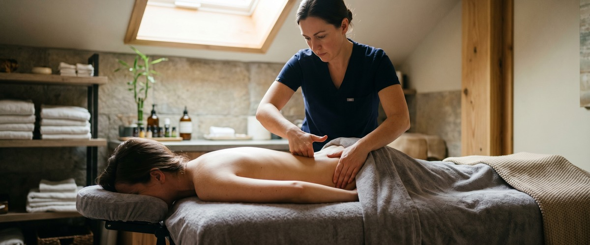
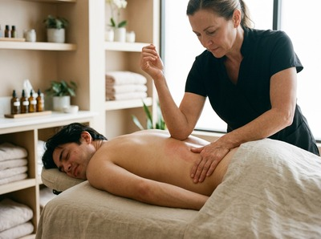
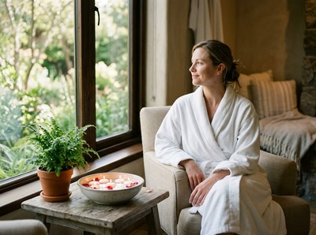

If backache is stopping you from sleeping, making it hard to concentrate at work, or turning simple tasks like bending down or getting out of a chair into a challenge, you are far from alone.

Back pain is one of the most common reasons people seek help, and the effect on daily life can be real and lasting. Thai massage for backache works on the muscle tension, postural strain, and restricted movement that drive most cases. It does not just mask the discomfort.
Backache is a broad term for pain in the neck, mid-back, or lower back. Most people feel it in the lower back. That region carries the most load during everyday movement, which makes it the most affected area.

Pain can range from a dull, steady ache to a sharp catch that flares with certain movements. Most cases have no single clear cause. Muscle strain, poor posture, sitting for long periods, and weak supporting muscles are among the most common factors.
Some groups are more at risk: people in desk jobs, those who do heavy lifting, and anyone who carries stress in their body.
A systematic review of massage for non-specific low back pain found clear short-term gains in both pain levels and physical function. Massage works in several ways. It releases tight muscles, improves blood flow, reduces protective tension, and calms the nervous system's pain response.
Traditional Thai Massage uses acupressure along the body's sen energy lines, combined with assisted stretching. This makes it well suited to backache caused by postural tension and stiffness. The stretching gently lengthens the muscles along either side of the spine.
It also releases hip flexors that pull the lower back out of line and helps restore a fuller range of movement. Thai Sports Massage takes a more focused approach. It works deeply into the posterior chain and suits clients whose back pain is linked to training or repetitive strain.
Where tension has built up across a wider area, Thai Oil Massage can also help. Flowing strokes and directed pressure soften the surrounding tissue before deeper work begins. You can book your session online and note the area of concern when you submit your booking.
At Thai Massage Greenock on South Street in Greenock, every session starts with a short conversation about what you are experiencing. Jariya Malone is a certified therapist trained at Bangkok's Wat Po temple. She notes where your pain is, how long it has been there, and what makes it better or worse.
That shapes the whole treatment. There is no fixed routine.

For backache, a session typically combines focused pressure along the lumbar and paraspinal muscles with assisted stretching through the hips, legs, and lower back. Jariya keeps detailed notes after each visit. If you return, the next session builds directly on what was found before.
Clients across Inverclyde find that a course of regular sessions produces results that a single treatment cannot fully achieve on its own. Book online to arrange your first appointment.
Backache treatment at Thai Massage Greenock suits a wide range of people. Office and remote workers who sit for long periods respond well, as do tradespeople and manual workers whose backs take daily strain. Drivers who spend hours behind the wheel also benefit.
Athletes managing lower back tightness around training and people in their 40s and 50s noticing stiffness that takes longer to ease also see strong results with regular Thai massage for back pain. Anyone returning to activity after time away from movement is equally well placed to benefit. If that sounds like you, get in touch and book a session.
Massage works on the physical causes of most common backache: tight muscles, restricted movement, and postural imbalance. Research in peer-reviewed journals shows clear reductions in both pain and disability after massage for non-specific low back pain. It does not simply mask discomfort. It addresses the muscle and tissue tension that creates much of the pain in the first place.
For most backache, which is non-specific and muscular in origin, Thai massage is safe and appropriate. Jariya will always ask about your history and symptoms before starting any treatment. If your pain suggests a structural or medical cause that needs further investigation, she will let you know. You should speak to your GP before booking if your pain followed an accident or comes with numbness or weakness in your legs.
Many clients notice a real drop in tension and discomfort after just one session. For long-standing backache, a course of four to six sessions over several weeks tends to produce the most lasting results. Jariya keeps detailed notes after each visit so every session builds on the one before.
Traditional Thai Massage uses acupressure and assisted stretching to release tension across the whole back, improve posture, and restore range of motion. Thai Sports Massage applies deeper, more targeted pressure to specific muscle groups. It suits back pain linked to training, repetitive strain, or physical work. Jariya will suggest whichever approach fits your situation best, or blend both within a single session.
NHS and clinical guidance recommends staying as active as you can rather than resting in bed. Gentle movement keeps circulation going and stops muscles from tightening further. Massage supports this by easing the tension that makes movement feel hard, so it becomes easier to stay active while your back recovers.
Thai Massage Greenock is at 0/2 16 South Street, Greenock, PA16 8UE. We see clients from across Inverclyde, including Gourock, Port Glasgow, and Kilmacolm. You can book online using the booking form on the website, or call 01475 600868 to talk through which treatment suits your back pain best.